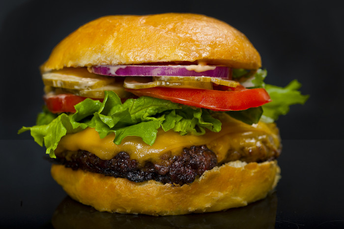

All american cheeseburger recipe

All-American Cheeseburger has certain non-negotiable elements: American cheese is one of them.
than unwrap individual singles, get sliced cheese from your nearest deli counter —
it tastes better and melts slower and more evenly. Dill pickle chips, sliced red onion and tomato, crisp lettuce leaves, ketchup and mayo are also involved.
Ingredients
- 2 pounds freshly ground meat
- 1 tablespoon onion powder
- 1 teaspoon salt
- 1 teaspoon freshly ground black pepper
- slices deli-counter American cheese
- 6 large burger buns, preferably homemade, toasted if desired
To garnish
- ketchup
- mayonnaise
- thousand island dressing
- sliced red onion
- sliced tomatoes